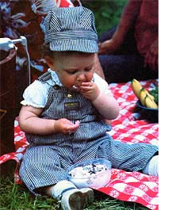
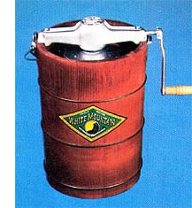
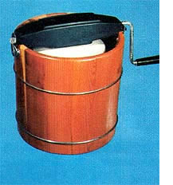

You can whip up some down-home (and yummy!) entertainment right in your own back yard!
Summer-with its sweltering temperatures and long, lazy evenings-is the perfect time for an old-fashioned ice cream party. And, since you'd probably prefer to avoid all the "stiffeners" and preservatives that are routinely dumped into the store-bought frozen confection, you ought to consider dusting off your old handturned freezer (or buying yourself a new one) and cranking out a natural, delicious treat for the whole family to enjoy.
Home-churned ice cream isn't nearly as hard to make as folks who've never tried it might expect . . . in fact, it's downright easyand fun-to get a picnic-full of people involved in cranking and freezing the mixture. Later, when the creamy dessert is finished, you'll experience the satisfaction of sidestepping the technological age and making a completely natural product with nothing more than healthful ingredients and good of muscle power . . . and you'll savor an unforgettable taste treat as the chilly delight slides down your throat!
The first step in fixing home-churned ice cream is to buy a good, dependable freezer (if you don't have one on hand) from among the few models that are still commercially available. So-to help you make your choiceMOTHER took a look at two representative brands, one made by White Mountain and the other by Richmond Cedar Works.
Both of these machines have tubs made of wood, which is a better material than plastic for this purpose . . . since timber is a superior insulator and will better contain the cold-produced by the melting iceinside the freezer.
We ordered our ice cream makers from the Cumberland General Store (Dept. TMEN, Route 3, Box 479, Crossville, Tennessee 38555), but you can probably also find the same models at retail outletssuch as Sears, Roebuck and Co.--for a few dollars less than the mail order price.
If you're in the market for the "old mas ter" of ice cream freezers, you should certainly consider the classic White Mountain ... it's a real beauty! Manufactured by White Mountain Freezer, Inc. of Winchendon, Massachusetts, the four-quart model (which we examined) has a thick wooden bucket and a solid cast-metal gear frame and crank.
Built to last through generations of use, the White Mountain freezer features a unique double-gear action, by which steel spur gears drive the can and the dasher in opposite directions. Quality craftsmanship is evident in every part of the device: The twotiered steel "mixer" is fitted with adjustable hardwood scrapers . . . the tall, heavy can has rolled seams which are carefully soldered along the inside edge ... and the stud which holds the can in place on the pivot in the floor of the tub is a separate piece that is joined to the steel bottom of the can.
The White Mountain four-quart freezer sells for $64.95 (when ordered from Cum Berland), but its combination of thoughtful engineering, careful construction, and sheer good looks makes this machine a real heirloom . . . a tool that your family can use and enjoy for generations to come.
The Richmond Cedar Works ice cream maker (made by RCW Manufacturing Corporation of Danville, Virginia) can't match the superior quality of the White Mountain model, but-at $29.95 for the five-quart sizeit's a moderately priced (and very functional) alternative to the more expensive freezer.
Most of this model's components are made of thermoplastic, with the exception of the wooden tub (which is considerably thinner than is the White Mountain bucket) and the tin-plated steel can. The freezer's plastic gear assembly has the more common singleaction gearing . . . whereby only the can is revolved, while the paddle remains stationary. The gear assembly fits loosely onto the can lid . . . and there is a fair amount of drag as the handle is turned (even when the machine is empty).
The inner can used in the Richmond Cedar Works freezer has a handy fill line to indicate how much mix should be poured in . . . but the seams on our unit's metal container were somewhat sloppily soldered and could result in some leakage (though we didn't note any). The can rest -which consists of a bump protruding from the vessel's bottom-fits snugly into a hollow in a plastic lug set into the freezer's particle board base.
A Richmond Cedar Works ice cream churn certainly isn't in the same league as the "luxury" White Mountain appliance, but the less expensive model-despite its minor faultsis a good, dependable product . . . and it may be the ideal choice for a newcomer to the world of do-it-yourself ice cream making.
Once you've chosen your freezer and brought it home, your next step should be to wash the new machine. Since the cream and milk used in making a frozen dessert can breed bacteria rapidly, hygiene has to be of primary concern to any backyard ice cream chef. Before each use you should thoroughly wash the freezer can, lid, and dasher in hot, soapy water. Rinse the parts well and let them air dry, then cool them-in your 'fridge-for about 30 minutes ... because the cream will freeze much faster in a cold container.
Next, pour the chilled mixture-made from either your favorite recipe or one of the formulas that accompany this article-into the can . . . making sure that the vessel is no more than 2/3 full. (You must allow some room for expansion, as air seeps into the substance while it's freezing.) Balance the container in position in the bottom of the .tub, secure the dasher inside the can, and put the lid in place.
At this point, the device is ready to be filled with its freezing agents . . . crushed ice and rock salt. You'll want to use ice that's crushed as fine as possible, since smaller pieces will melt more evenly ... producing a stable freezing process and giving your end product a smoother texture. Start by distributing ice all around the bottom of the tub-to a depth of about two inches-- and follow that with a layer of rock salt- (The coarse substance is generally available in supermarkets, but if you can't find it-or if you run short during the freezing operation-regular table salt is an acceptable, though costly, substitute.)
The amount of salt you use in your freezer will be the main factor in determining the consistency of the ice cream you make. Too little salt-which will tend to slow up the freezing time and force you to crank longerwill produce a grainy end product ... while too much salt-which will speed up the freezing process-will give the ice cream a spongy, coarse texture. So, when packing in the layers of ice and salt, you should always stick to the proportion of 4 parts ice to 1 part salt (or one cup of ice to 114 cup of salt). You'll find that such a combination produces a smooth, fluffy dessert every time.
Continue alternating layers of ice and salt until the can is totally surrounded (but not covered). Then attach the gear drive and crank to the lid of the can . . . and start the of machine turning! As you rotate the handle, the can revolves inside the tub . . . while the action of the salt melting the ice gradually freezes the cream mixture. Make sure that the small hole in the side of the bucket remains unclogged throughout the procedure, so that the brine solution can drain off freely. And-as the ice continues to melt-you'll need to add more layers of ice and salt ... always maintaining the 4-to-1 ratio.
After you've been turning the handle for a few minutes, the cream will begin to harden ... and the task of cranking will, from then on, get progressively more difficult. It's a good idea-as you tire of the job-to send in the "relief shift" and put a new set of muscles to work. And-since the bucket will tend to "walk" as the dasher encounters more resistance-it might also be helpful to have a second person hold the tub (or even sit on top of the gear mechanism) to help stabilize the freezer.
The crank should become virtually impossible to turn after about 18 to 20 min utes ... and that means your summertime treat is finally ready! Remove the gear and handle piece, wipe off the lid, and open the can. If you've added the right amounts of ice and salt while continually turning the handle at a steady tempo, you should find a creamy, smooth confection just waiting to be consumed!
Remove the dasher and hand it over to the crankers (it's traditional to offer that piece to the hard workers, since it reportedly holds the tastiest part of the frozen delight). Then pack down the rest of the ice cream with a long-handled spoon and dish it out to your hungry crowd!
It's doubtful that any of the tasty dessert will be left over after the first round or two of servings, but if you should happen to have a bit of ice cream remaining (or if you want to further harden the whole batch before dishing it up), you can easily "cure" the soft food for several hours. To do so, simply cover the treat (in the metal container) with foil or plastic wrap, replace the top on the can, and tightly plug the hole in the lid's center with a cork. After you've drained off any remaining brine solution through the tub's side hole, repack the freezer with new layers of ice and salt (using a bit more rock salt per volume of ice than you did during the freezing process). Finally, wrap the tub in a heavy towel or burlap bag, and set it away in a cool place until serving time.
You can also preserve the homemade dessert for an even longer period of time. If you're using a unit whose inner can is small enough to fit into a refrigerator's freezing compartment, just place the can in your kitchen freezer for three hours. Then transfer the hardened ice cream to plastic containers for long-term cold storage . . . where it should keep for as long as a month.
Whether you devour the icy heat-beater freshly frozen or put it by to savor on one of those scorching August afternoons, you're sure to agree that homemade ice cream is just about the best taste around for a summertime dessert. It's cool, refreshing, and-best of all-a natural treat that you create yourself!
HOW TO FREEZE FOOLPROOF DESSERTS
The basic recipe for preparing your own ice cream is quite simple . . . just remember "M.E.S.S."! The acronym stands for milk (and cream), eggs, salt, and sweetener . . . a formula that's used as the foundation for all old-fashioned ice creams. The milk, cream, and eggs contain important natural stabilizing elements that will keep your homemade batch smooth, even after freezing . . . while the salt and sweetener have a crucial effect on the taste of the finished product. Besides those basic ingredients, all the mixture will need are any fruits, extracts, or other flavorings you might want to add.
However, the M. E. S. S. recipe isn't a hard and fast rule . . . there are some possible variations. If you'd like to avoid the high cost of supermarket whipping cream, for example, it's possible to substitute half-and-half . . . although ice cream made with the less expensive dairy product won't have as smooth a texture as will a confection containing heavy cream, and the lighter dessert will tend to ice up when stored for longer than a day or so.
You might also want to use honey in place of processed sugar, but be prepared for an ice cream with a subtly different taste. Use the natural sweetener sparingly, and never in as large a proportion as sugar. A good rule of thumb is to start with only half as much honey as the amount of sugar that's called for in the recipe, and add more-to tasteif you feel it's needed.
Keep in mind, too, that honey doesn't permit the cream to whip up as well as sugar does, and will sometimes even fail to blend well with other ingredients. So if the end product tastes flat or has a grainy texture, you can probably blame it on the amount of honey you used. Just keep experimenting (and tasting!) . . . and you'll eventually hit upon your own version of the ideal homemade treat.
If you're making a fruit-flavored ice cream, the natural ingredients will need to be sweetened before they're added to the M.E. S. S. mix, since a certain amount of any fruit's natural flavor is lost in the freezing process. Mash up about 3/!, of your produce and add sugar or honey to please your tastebuds. The remaining berries, peaches, etc. should be left whole or cut into pieces-depending upon their size-and put in during the final minutes of churning. (Fruit. ice cream, by the way, has a more muted color than do the fruits themselves . . . so don't be surprised if, for example, your apricot - flavored confection turns out to be white!)
A "BERRY GOOD" DISH
One of the most distinctive-and best - tastes in the world of natural fruit ice cream has to be raspberry . . . and you can make the tart confection with either fresh or frozen berries. Mix 2 cups of cream and 1 cup of milk (or 3 cups of half-and-half) together with one fresh egg, 1/y teaspoon of salt, and about 1/y cup of cane sugar. (Actually, the amount of sugar you add will vary, according to the tartness of the fruit and to your own taste preference. Remember, also, to sweeten the mashed fruit before you mix it with the M. E. S. S. ) The recipe calls for a total of 2 cups mashed raspberries, or approximately the amount contained in two small produce baskets. Raspberry ice cream has a unique taste that's actually tart and sweet at the same time . . . and it's sure to have ice cream lovers--and even skeptics-lined up for seconds.
THE TOP BANANA
Unlike raspberries, bananas require very little extra sweetener . . . and the tropical fruits are especially delicious in ice cream when combined with nuts. You should always use very ripe fruit in banana-nut ice cream . . . but you can put in any kind of nuts you prefer (try dryroasted peanuts, sliced almonds, or finely chopped walnuts for starters). The M.E.S.S. for this recipe consists of 2 cups of cream and 1-1/2 cups of milk (or s-1/2 cups of half-andhalf), one fresh egg, 1/4 teaspoon of salt, and 2/3 cup of cane sugar. Once the base as well blended, fold in 1 pound of the ripe, mashed fruit (which is usually equal to about 2 or 3 bananas) and 1/2 cup of .crushed nuts . . . then freeze at up and watch it disappear!
Here's good news for folks who like the idea of a pure, homemade dessert but don't want to consume all the calories that ice cream contains: It's possible to make delectable frozen yogurt in your home ice cream freezer! Simply puree whatever fruit you want to usealong with some sweetener-in a blender . . . and then mix the mashed fruit with plain yogurt, right in the freezer can. The procedure for freezing the nourishing treat is just the same as for ice cream . . . and, after 18 to ;20 minutes of cranking, you'll turn out a cooling dessert that's both low in calories and high in protein.
(Strawberries make an especially delicious frozen yogurt. Just blend 4 cups of plain yogurt with 1/4 cup of cane sugar and then fold in 1 cup of mashed, sweetened strawberries . . . either fresh or frozen. Save another 1/2 cup of berries-cut into chunks-to pop into the mix during the last few turns of the crank.)
EDITOR'S NOTE: All of the two-quart recipes given above were taken from Old Uncle Gaylord's Ice Cream Book: A Guide to the Art & Pleasure of Old-Fashioned Ice Cream Making, by Gaylord Willis and Ted Benhari . . . a fine little volume, which you can order-for $2.75 plus $1.00 shipping and handling-from Mother's Bookshelf, P.O. Box 70, Hendersonville, North Carolina 28791.
|
 Who needs a spoon, anyway? |
 White Mountain . . . the Cadillac of ice cream freezers. |
 Richmond Cedar Works . . . a sturdy economy handcranker. |